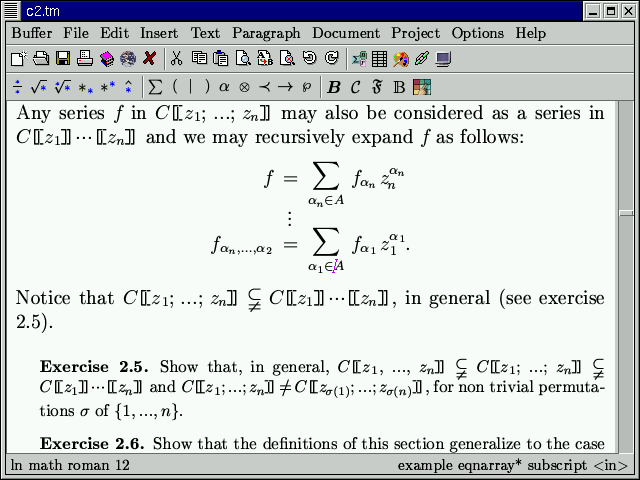

[main]Notes on TeXmacs
[main]Notes on TeXmacs
 [main]Notes on TeXmacs
[main]Notes on TeXmacs
A rapid overview/executive summary of the TeXmacs system.
Visual structured editor: WYSWYG & WYSWYM
Inspired by TeX and
High-quality typesetting algorithms (including microtypography)
Special features for mathematical typesetting and input
Support for interactive sessions: Scheme, Python, R, Octave, Maxima, Axiom, Mathemagix (and other CAS).
Multi-platform: Unix, MacOS, Windows (via
Own format (
Internal image editor, interfaces to
Website and documentation written in TeXmacs

The legacy X11 backend
The

Structured editing, high quality math typesetting
Presentation mode

Graphics editor

Microtypography, synthetic math fonts

Interfaces to external packages (here DraTeX)

Interfaces to external packages (here
Support for oriental scripts
Started in 1998 by
v0.2.3β released 26 Oct 1999
v1.0 (2002)
native
currently version 1.99.9 (soon 2.1)
Written in
Fully modular, external dependencies (mostly) isolated via tight interfaces.
Two UI backends: legacy
GNU Guile as extension language. C++ export basic manipulation routines and few internal datatypes.
All TeXmacs documents or document fragments can be thought of as trees.
For instance, the tree

typically represents the formula
Serialization of TeXmacs documents without loss of informations
TeXmacs format
<frac><tm-arg>1</tm-arg><tm-arg>2</tm-arg></frac>+<sqrt>y+z</sqrt>
(with "mode" "math" (concat "x+y+" (frac "1" "2") "+" (sqrt "y+z")))
Typesetting process converts TeXmacs trees into boxes:
The typesetting primitives are designed to be very fast and they are built-in into the editor:
e.g. typesetting primitives for horizontal concatenations (concat), page breaks (page-break), mathematical fractions (frac), hyperlinks (hlink), and so on.
The rendering of many of the primitives may be customized through the built-in environment variables.
e.g. the environment variable color specifies the current color of objects, par-left the current left margin of paragraphs, etc.
The stylesheet language allows the user to write new primitives (macros) on top of the built-in primitives.
Contains primitives for defining macros, conditional
statements, computations, delayed execution, etc. and a
special extern tag to inject
Evaluation of TeXmacs trees proceeds by reduction of the primitives, essentialy by evaluation of macro applications.
<assign|hello|<macro|name|Hello name, how are you today?>>
Macros have editable input fields. Examples here below (activate the macros):
<assign|hello|>
<assign|seq|>
TeXmacs is extendable and customizable in various ways:
A plugin system allows asyncronous communication with external programs
Mechanism to dynamically load external code (via C interface)
Why
Allows to mix programs and data in a common framework.
Allows to customize the language itself, by adding new programming constructs.
Allows to write programs on a very abstract level.
(menu-bind file-menu
("New" (new-buffer))
("Load" (choose-file load-buffer "Load file" ""))
("Save" (save-buffer))
…)
can be easily extended from user code:
(menu-bind insert-menu
(former)
–––
(-> "Opening"
("Dear Sir" (insert "Dear Sir,"))
("Dear Madam" (insert "Dear Madam,")))
(-> "Closing"
("Yours sincerely" (insert "Yours sincerely,"))
("Greetings" (insert "Greetings,"))))
Keybindings
(kbd-map
("D e f ." (make 'definition))
("L e m ." (make 'lemma))
("P r o p ." (make 'proposition))
("T h ." (make 'theorem)))
The file my-init-buffer.scm is executed every time a buffer is loaded, it allows some specific customizations. For example:
(if (not (buffer-has-name? (current-buffer)))
(begin
(init-style "article")
(buffer-pretend-saved (current-buffer))))
(if (not (buffer-has-name? (current-buffer)))
(make-session "maxima" (url->string (current-buffer))))
A
scheme] |
(define (square x) (* x x)) |
scheme] |
(square 1111111) |
scheme] |
(kbd-map ("h i ." (insert "Hi there!"))) |
scheme] |
;; try typing ‘‘hi.'' |
texmacs text.tm -x "(print)" -q
Or scheme statement executed from inside TeXmacs macros:
<extern|(lambda (x) ‘(concat "Hallo " ,x))|Piet>
Contextual overloading
Function definition can depend on several run-time conditions (e.g. editor mode). This allows to develop modular user interfaces.
(tm-define (hello) (insert "Hello")) (tm-define (hello) (:require (in-math?)) (insert-go-to "hello()" '(6)))
(tm-define (hello) (if (in-math?) (insert-go-to "hello()" '(6)) (former)))
(tm-define (my-replace what by) default-implementation) (tm-define (my-replace what by) (:require (== what by)) (noop))
(tm-define (square x) (:synopsis "Compute the square of @x") (:argument x "A number") (:returns "The square of @x") (* x x))
Used via e.g. (help square). Allows for interactive input of parameters: typing ⌘⌃⇧X followed by square and ↩ and you will be prompted for “A number” on the footer (or in a dialog). Tab-completion.
(tm-property (choose-file fun text type) (:interactive #t))
to indicate interactive commands in menu items like:
("Load" (choose-file load-buffer "Load file" ""))
Check-marks for menu items:
(tm-define (toggle-session-math-input) (:check-mark "v" session-math-input?) (session-use-math-input (not (session-math-input?))))
(tm-define mouse-unfold
(:secure #t)
(with-action t
(tree-go-to t :start)
(fold)))
This is a fold/unfold environment
It allows to toggle the display of its content by switching the tag from fold to unfold and back.
Passive trees (stree)
is typically represented by
(frac (concat "a" (rsup "2")) "b+c")
convenient to manipulate content directly using standard
Active trees (tree). TeXmacs internal C++
type tree which is exported to
Hybrid representation (content). an expression of the type content is either a string, a tree or a list whose first element is a symbol and whose remaining elements are other expressions of type content.
| scheme] | (tree-set! t '(document "First line." "Second line.")) |
| scheme] | (tree-set t 1 "New second line.") |
| scheme] | (tree-set t 0 ‘(strong ,(tree-ref t 0))) |
(tm-define (swap-numerator-denominator t)
(:require (tree-is? t 'frac))
(with p (tree-cursor-path t)
(tree-set! t ‘(frac ,(tree-ref t 1) ,(tree-ref t 0)))
(tree-go-to t (cons (- 1 (car p)) (cdr p)))
(tree-focus t)))
To be called as (swap-numerator-denominator (focus-tree)), or just add it as a structured variant to frac
(tm-define (variant-circulate t forward?) (:require (tree-is? t 'frac)) (swap-numerator-denominator t))
TeXmacs implements the routines match? and select for matching regular expressions and selecting subexpressions along a “path”. For instance: in the current buffer search all expressions of the form
where and are general expressions:
| Scheme] | (select (buffer-tree) '(:* (:match (frac :%1 (concat "1+" (sqrt :%1)))))) |
User preferences
(define-preferences
("Gnu's hair color" "brown" notify-gnu-hair-change)
("Snail's cruising speed" "1mm/sec" notify-Achilles))
New data formats and converters
(define-format blablah (:name "Blablah") (:suffix "bla")) (converter blablah-file latex-file (:require (url-exists-in-path? "bla2tex")) (:shell "bla2tex" from ">" to))
When a format can be converted from or into TeXmacs, then it will
automatically appear into the
Dialogues
| Scheme] |
(user-ask "First number:"
(lambda (a)
(user-ask "Second number:"
(lambda (b)
(set-message (number->string (* (string->number a)
(string->number b)))
"product"))))) |
Widgets
| Scheme] |
(tm-widget (example3)
(hlist
(bold (text "Hello"))
>>>
(inert (explicit-buttons ("world" (display "!\n")))))) |
| Scheme] | (top-window example3 "Some text") |
| Scheme] |
| Scheme] |
(define t
(stree->tree
'(root
(library "Library" "$TEXMACS_PIXMAP_PATH/tm_german.xpm" 01
(collection "Cool stuff" 001)
(collection "Things to read" 002)
(collection "Current work" 003
(collection "Forever current" 004)
(collection "Read me" 005)))))) |
| Scheme] |
(define dd
(stree->tree
'(list (library DisplayRole DecorationRole UserRole:1)
(collection DisplayRole UserRole:1)))) |
| Scheme] |
(define (action clicked cmd-role . user-roles)
(display* "clicked= " clicked ", cmd-role= " cmd-role
", user-roles= " user-roles "\n"))) |
| Scheme] |
(tm-widget (widget-library)
(resize ("150px" "400px" "9000px") ("300px" "600px" "9000px")
(vertical
(bold (text "Testing tree-view"))
===
(tree-view action t dd)))) |
| Scheme] | (top-window widget-library "Tree View") |
| Scheme] |
| Scheme] |
(tm-widget (form3 cmd)
(resize "500px" "500px"
(padded
(form "Test"
(aligned
(item (text "Input:")
(form-input "fieldname1" "string" '("one") "1w"))
(item === ===)
(item (text "Enum:")
(form-enum "fieldname2" '("one" "two" "three") "two" "2w"))
(item === ===)
(item (text "Choice:")
(form-choice "fieldname3" '("one" "two" "three") "one"))
(item === ===)
(item (text "Choices:")
(form-choices "fieldname4"
'("one" "two" "three")
'("one" "two"))))
(bottom-buttons
("Cancel" (cmd "cancel")) >>
("Ok"
(display* (form-fields) " -> " (form-values) "\n")
(cmd "ok"))))))) |
| Scheme] | (dialogue-window form3 (lambda (x) (display* x "\n")) "Test of form3") |
| Scheme] |
New styles can be defined via
(texmacs-module (bibtex example) (:use (bibtex bib-utils))) (bib-define-style "example" "plain") (tm-define (bib-format-date e) (:mode bib-example?) (bib-format-field e "year"))
This example style behaves in a similar way as the plain style, except that all dates are formatted according to our custom routine. Styles are stored in $TEXMACS_PATH/progs/bibtex and referred to as e.g. tm-example (for when used in a TeXmacs document.
Graphics objects are also part of the TeXmacs format and can be manipulated programmatically from Scheme.
Actually, part of the graphics editor is written in Scheme.
Scheme] |
(stree->tree
'(with gr-geometry (tuple "geometry" "200px" "100px" "center")
color "blue"
(graphics (text-at "TeXmacs" (point "-2.5" "-1"))
(point 0 -1)
(line (point 0 0) (point 0 1)
(point 1 1) (point 1 0) (point 0 0))))) |

| Scheme] |
Many improvements ahead
Version 2.1 to be released soon
Update the backend to
Adapt the scheme code to run on
New website, documentations, videos [WIP]
Improvements to the styling of presentations and posters [WIP]
More documentation, more tutorial, grow community [Stackexchange proposal]
Collaboration tools
Bibliography management with
Many opportunities for contributions for all tastes
From the outside
Write and review documentations, tutorials, videos, improve community, advertise
Develop plugins to your preferred system or to add your preferred feature, e.g.: literate programming tools with beautyful output
Write new document styles, templates, presentation styles, poster styles
Font tuning
Hack the
Understand the code and write developer documentation
Improve the
Write new backends (
Hack
Help porting to
fix bugs, review code, add new cool features